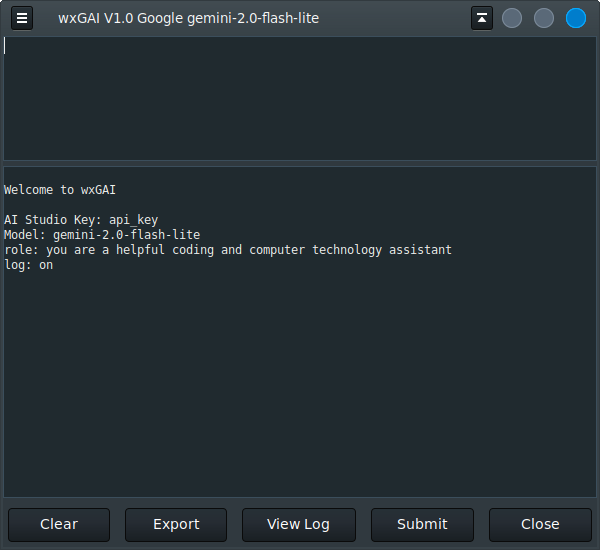

wxGAI is similar to wxAI which uses OpenAI.
You will need a Google AI Studio api-key to use this program.
wxGAI is written in Python3 with wxPython producing the theme integrated GTK GUI look-and-feel on Linux and a true light theme look on Windows.
The wxGAI options.ini file must be edited manually.
At this time this is what an options.ini might contain:
# wxGAI.py
gemini=MyKey
model=gemini-2.0-flash-lite
role=you are a helpful coding assistant
log=on
fontsz1=10
fontsz2=12
The Export button converts the markdown response to HTML and presents it in the system default browser.
The other function buttons are self explanatory.
Ctrl-H This help message
Ctrl-F Find text
Ctrl-N Find next
Ctrl-Q Quit App
Ctrl-G Execute AI request
Alt-Ctrl-C
Copy Code in Markup
wxGAI requires these other python3 modules:
markdown
wx
google.generativeai
To run:
$ python3 wxGAI.py